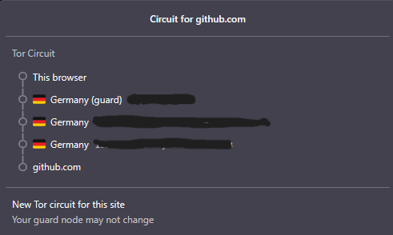
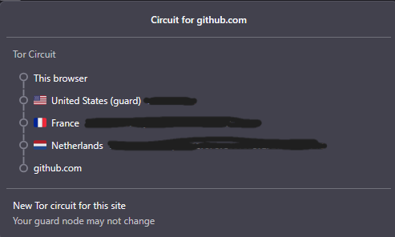
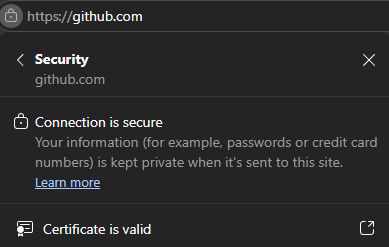

3 hops
Guard, middle y exit observados en Tor Browser.
Observación de un circuito real de Tor Browser y threat model del flujo de creación y financiación de un escrow en Pactrail.
github.com
evidencia y análisis
Guard, middle y exit observados en Tor Browser.
Cambiaron los tres hops tras solicitar un nuevo circuito.
Solo sitio clearnet público; sin operación de red.
crear y financiar un escrow
createEscrow desde el navegador.fund() y el contrato queda financiado.El venture continúa leyendo la cuenta, parámetros, estado y actividad necesarios para operar el contrato en la red pública.
sin IPs completas
La interfaz indicó que el guard podía no cambiar.
En esta observación cambiaron guard, middle y exit.
HTTPS · Tor · I2P conceptual
| Elemento | Solo HTTPS | Tor sobre clearnet | I2P dentro de I2P |
|---|---|---|---|
| IP del usuario | El sitio recibe la conexión directa. | El sitio ve la IP del exit; la red local/guard pueden ver el origen. | El servicio I2P ve un punto de salida de I2P; no aplica a github.com. |
| Destino | Conexión directa al servicio. | El exit conecta con el sitio clearnet. | Requiere un servicio dentro de I2P. |
| Payload | HTTPS lo protege frente a intermediarios. | HTTPS continúa protegiendo el payload. | Depende también de HTTPS y autenticación del servicio. |
| Exit o relay malicioso | No hay exit Tor; un intermediario ve metadatos. | Puede ver destino, tiempos y volumen, no el payload HTTPS. | Puede observar metadatos de su tramo. |
| Login | La cuenta, firma y cookies llegan al venture. | Tor no elimina la identidad entregada ni la cuenta de la billetera. | I2P tampoco reemplaza la identidad de aplicación. |
| Costo para el usuario | Latencia y gas habituales. | Más latencia/fricción, además de gas y firmas. | Mayor complejidad; no se instala para este lab. |
| Qué sigue viendo el venture | Cuenta, escrow, parámetros, estado y actividad. | Lo mismo a nivel de aplicación; no necesariamente la IP de origen. | La red de transporte no elimina los datos operativos. |
metadatos frente a payload
| Componente | Puede observar | No puede observar directamente |
|---|---|---|
| Red local | Conexión a Tor y metadatos básicos. | Sitio final y payload HTTPS. |
| Guard | Conexión del usuario e IP de origen. | Contenido final protegido por HTTPS. |
| Middle | Que participa en el circuito. | Identidad completa y payload final. |
| Exit | Destino, tiempos y volumen. | Payload protegido por HTTPS. |
| Sitio | Conexión proveniente del exit. | IP real del usuario de Tor. |
Tor no es anonimato absoluto
qué debe seguir viendo Pactrail
Tor puede ocultar la IP de origen, pero Pactrail debe seguir viendo la identidad de la cuenta o billetera, beneficiario, verificador, importe, vencimiento, requisitos, estado, firmas e historial de actividad necesarios para operar y auditar el contrato.
También puede necesitar correo, datos de una orden, soporte e información para cumplir obligaciones legales o de Persona Obligada. Esta evaluación se documenta teniendo presente el marco PSAV / 15-2026.
capturas referenciadas



Las tres capturas están incluidas y muestran las IPs cubiertas.